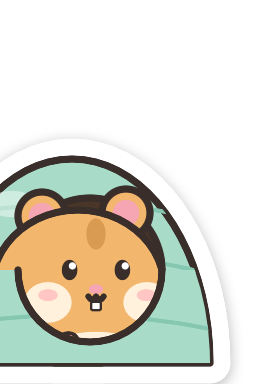

先交给猫咪，
用时再拿回来。
PawShelf 是为 Mac 打造的置物架。一个小角色从屏幕边缘探出头来，在你切换 App 时帮你暂存文件、文件夹、图像、链接和文本。
即将登陆 Mac App Store
需要 macOS 14 或更高版本，支持搭载 Apple 芯片和 Intel 处理器的 Mac。
使用方法

放到标签上
把任何东西拖到屏幕边缘的角色上。离边缘太远？拖动时晃一晃指针，置物架就会在指针旁边打开。

继续工作
切换 App、空间或全屏窗口，标签都会留在边缘。重新启动 Mac 后，项目依然都在。

拖出来用
把项目拖进访达、邮件、聊天窗口或上传表单。也可以选中多个项目一起拖出。
选一位帮你保管东西的伙伴
12 位角色各有各的收纳方式，有些习性还真能派上用场：看仓鼠的腮帮子就知道置物架有多满，松鼠会提醒你被遗忘的项目，企鹅的冰块会把不再需要的项目融化掉。
-


纸箱猫
把你的东西藏进纸箱里
-

囤囤仓鼠
置物架越满，腮帮子越鼓
-


橡果松鼠
记得被遗忘的橡果，并提醒你整理
-


冰冰企鹅
把东西冰镇起来，直到它们融化消失
-


熬夜猫头鹰
夜里精神抖擞，白天昏昏欲睡
-


闪闪喜鹊
收集闪闪发亮的链接和图片
-


叼叼狗
需要时帮你把东西叼回来
-


口袋袋鼠
把东西稳稳地放在育儿袋里
-


鹈鹕
张开大嘴接住拖放过来的东西
-


八爪章鱼
每只触手各抱一样东西
-


挖洞鼹鼠
把东西藏进地洞里
-


硬壳乌龟
把东西护在壳底下
把指针移到贴纸上，跟它们打个招呼吧。
置物架该做的，它都能做
剪贴板历史
最近拷贝的 50 条内容就在置物架上。密码管理器标记为私密的拷贝绝不会被记录。
自动收集新文件
选一个文件夹，比如截屏或下载，新文件就会自动出现在置物架上。
搜索图像中的文字
凭截屏里的文字就能找到它。文字识别在你的 Mac 上完成。
链接标题和图标
链接会显示网页标题和图标，而不只是一串网址。
最近移除
不小心移除了？可以在置物架的“⋯”菜单里找回来。
预览和共享
按空格键快速查看，或通过隔空投送和信息发送项目。
合集
把相关项目归入合集，一次只显示一个合集。
每个空间都在
标签会出现在每个空间里，也会浮在全屏 App 之上，可放在左侧或右侧边缘。
支持旁白
置物架上的每个按钮和项目都有旁白标签。